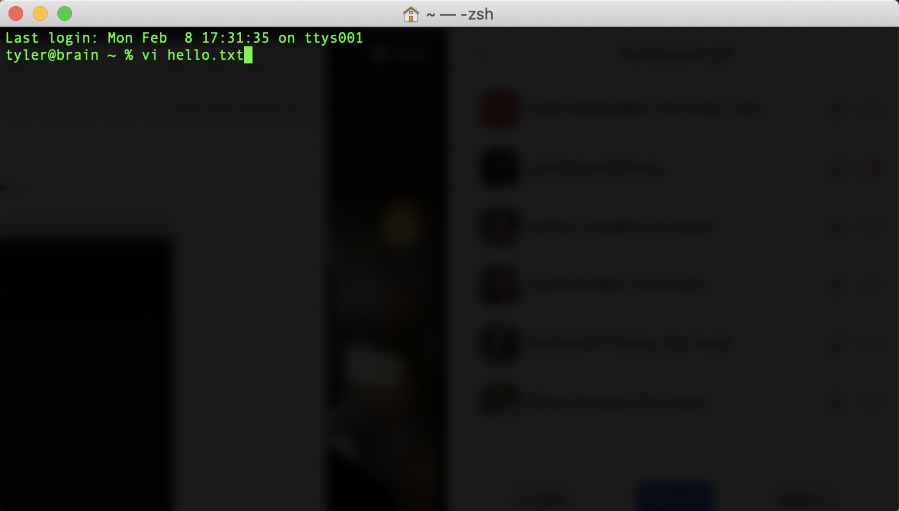
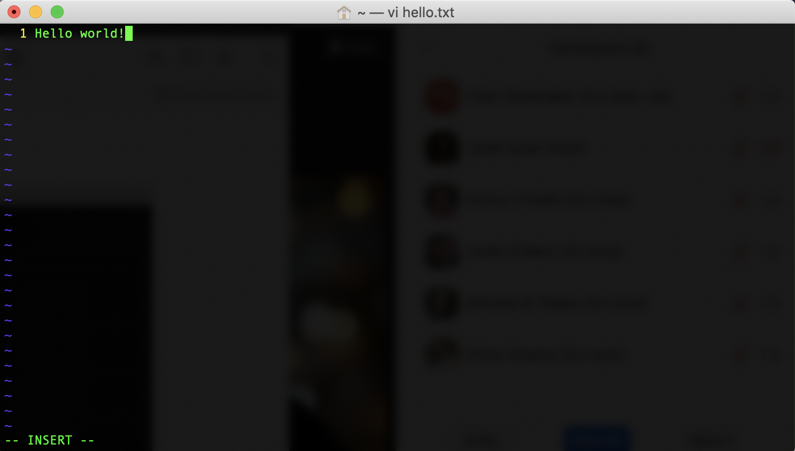
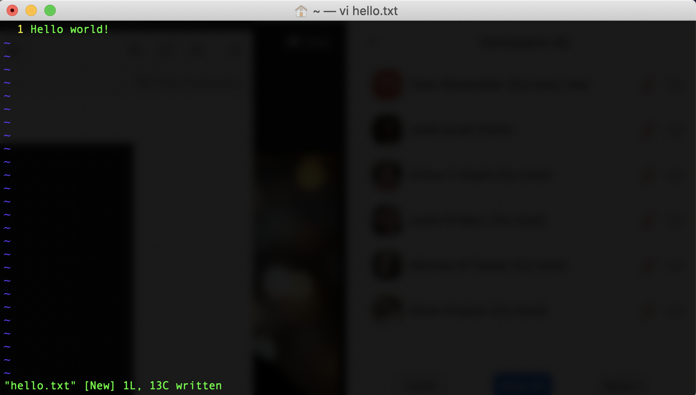

2 Text Editing with the Command Line
The command line also features a variety of different text editors, similar in nature to Microsoft Word or Mac Pages but much more stripped down. These editors are only accessible from the command line and it is important to know how to use them so that you can open, read, and write directly in the command line window.
2.1 Accessing Command Line Text Editors
Macs and Git Bash both ship with a text editor called Vim (other common editors include Emacs and Nano). To
open a file with vim, type vi in a command line window, followed by the filename. If you want to create a new
file, simply type the filename you’d like to use for that file after vi.

Vim works a bit differently than other text editors and word processors. It has a number of ‘modes,’ which provide different forms of interaction with a file’s data. We will focus on two modes, Normal mode and Insert. When you open a file with Vim, the program starts in Normal mode. This mode is command-based and, somewhat strangely, it doesn’t let you insert text directly in the document (the reasons for this have to do with Vim’s underlying design philosophy: we’re more likely to edit text on the command line than we are to write it).
To insert text in your document, switch to Insert mode by pressing i. You can check whether you’re in Insert mode
by looking at the bottom left hand portion of the window, which should read -- INSERT --.

Once you are done inserting text, pressing ESC (the Escape key) will bring you back to Normal mode. From here,
you can save and quit your file, though these actions differ from other text editors and word processors: saving
and quitting with Vim works through a sequence of key commands (or chords), which you enter from Normal mode.
To save a file in Vim, make sure you are in Normal mode and then enter :w. Note the colon, which must be included.
After you’ve entered this key sequence, in the bottom left hand corner of your window you should see “[filename]
XL, XC written” (L stands for “lines” and C stands for “characters”).

To quit Vim, enter :q. This should take you back to your command line and, if you have created a new file, you
will now see that file in your window.
If you don’t want to save the changes you’ve made in a file, you can toss them out by typing :q! in place of
:w and then :q. Also, in Vim key sequences for save, quit, and hundreds of other commands can be chained
together. For example, instead of separately inputting :w and :q to save and quit a file, you can use :wq,
which will produce the same effect. There are dozens of base commands like this in Vim, and the program can be
customized far beyond what you’ll typically need for basic command line usage. More information about this text
editor can be found here.
2.2 Basic Vim Commands
| Command | Function |
|---|---|
| esc | Enter Normal mode. |
| i | Enter Insert mdoe. |
| :w | Save. |
| :q | Quit. |
| :q! | Quit without saving. |
For a more complete list of Vim commands, see this Cheat Sheet.